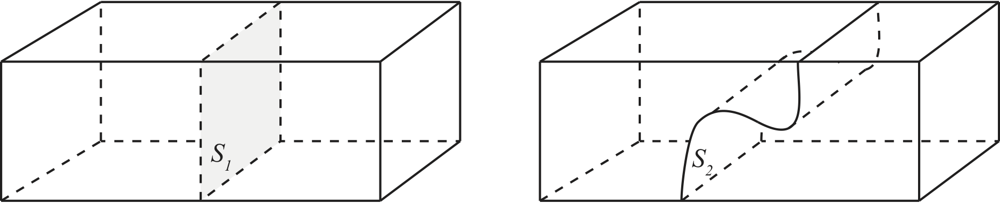
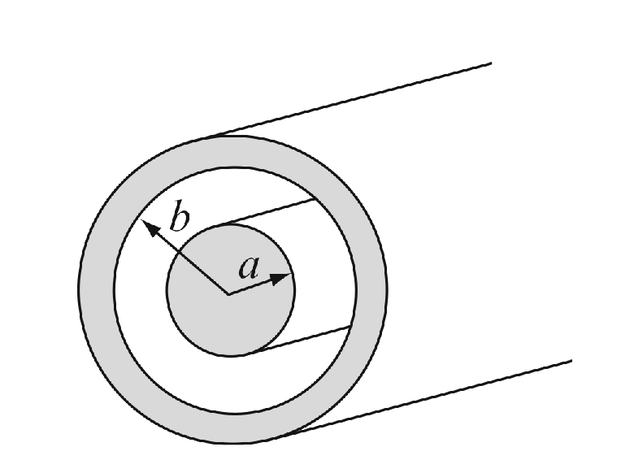

Positive ioner strømmer til høyre gjennom en væske, negative ioner strømmer til venstre. Den romlige tettheten og hastigheten til begge typer ioner er identiske. Er det en netto strøm gjennom væsken? (A) Ja, til høyre; (B) Ja, til venstre, (C) Nei, (D) Ikke tilstrekkelig informasjon.
A
Du har en lang stav med kvadratisk tverrsnitt og det går en strøm med homogen strømtetthet rettet langsmed staven. Er strømmen gjennom flaten \( S_1 \) den samme som gjennom flaten \( S_2 \)?

Er netto strøm av ladning ut av en lukket overflate alltid null? Hvis ikke, kan du komme med noen moteksempler?
a) For a homogeneous current density \( \vec{J} = J_0 \hat{x} \), what is the current through all the surfaces of a cube with corners at \( (-1,-1,-1) \), \( (-1,+1,-1) \), \( (+1,-1,-1) \), \( (+1,+1,-1) \), \( (-1,-1,+1) \), \( (-1,+1,+1) \), \( (+1,-1,+1) \), and \( (+1,+1,+1) \) all measured in units of \( a \).
\( I=\pm J_0 4 a^2 \) for the surfaces through \( (\pm1,0,0) \), and zero for the other surfaces.
We notice that the area of the each of the squares are \( 4 a^2 \). The current is \( I = \vec{J} \cdot \vec{S} \). It is only the surfaces with normals in the \( \hat{x} \) direction that will have non-zero currents. For the surface through \( (1,0,0) \) the current is \( 4 a^2 J_0 \) since the surface normal is in the positive \( x \)-direction, and for the surface through \( (-1,0,0) \) the current is \( -4 a^2 J_0 \) since the surface normal is in the negative \( x \)-direction.
b) A block with uniform charge density \( \rho \) is moving with a constant velocity \( \vec{v} = v_0\hat{z} \). What is the current density \( \vec{J} \) at a specific point in space inside the block (the point does not move along with the block). What would the current density \( \vec{J} \) be if the point moved along with the block?
\( \vec{J} = \rho v_0 \hat{z} \).
The current density will be in the direction of \( \vec{v} \). The amount of charge moving through a small surface \( S \) with a normal in the \( \hat{z} \) direction in a time interval \( dt \) will be \( dq = \rho dV = \rho S v_0 dt \), thus \( I = dq/dt = \rho S v_0 \) and the current density will be \( \vec{J} = \rho v_0 \hat{z} \).
We will now look at charges that are leaking across the cylindrical membrane of a part of the axon of length \( L \). We will assume that the myelin sheath is leaky (a conductor with conductivity \( \sigma \)) and that there is a radially-symmetric current density \( \vec{J} \) leaking across it due to a potential difference. We will find the resistance \( R \) of a piece of the cylinder of length \( L \). We assuming that the inner part of the cylidrical shell is connected to a potential \( V \) and that the outer part of the shell is connected to a potential \( V=0 \).
We will find the resitance of this system by (i) making a drawing of the system, (ii) drawing the expected current density, (iii) finding the electric field for this current density, (iv) finding the potential by integrating the electric field, and (v) finding the resistance by relating the current to the potential difference. (Notice the similarity of this method and the method you used to find the capacitance!)
a) Make a drawing of the cylindrical system. Sketch the current density.
b) Given that there is a radially-symmetric current density, find the current density \( \vec{J} \) expressed in terms of the total current \( I \).
Integrate the current density along a cylindrical surface.
We find the current density, by realizing that the current must be the same through each cylindrical surface with radius \( r \) --- due to symmetry. The current \( I \) is therefore found from the surface integral of \( \vec{J} \) over the cylindrical surface \( S \): $$ \begin{equation} I = \int_S \vec{J} \cdot d \vec{S} = 2 \pi r L J \, \Rightarrow \, J = I/(2 \pi r L) \; . \tag{6.1} \end{equation} $$ This is only valid for \( a < r < b \), otherwise the current density is zero.
c) Find the electric field \( \vec{E} \) by using the current-density version of Ohm's law.
\( \vec{E} = I/(2 \pi r L \sigma) \, \hat{r} \) when \( a < r < b \) and \( 0 \) otherwise.
The plan is to find the electric field by first finding the electric current density \( \vec{J} \) and then finding the electric field from the current density using Ohm's law, \( \vec{E} = (1/\sigma) \vec{J} \). Based on the current density we found above, we can use Ohm's law to find: $$ \begin{equation} \vec{E} = \frac{1}{\sigma} \vec{J} = \frac{I}{2 \pi r L \sigma}\hat{r} \; , \tag{6.2} \end{equation} $$ when \( a < r < b \), otherwise \( \vec{E} = 0 \).
d) Use the electric field to relate the current \( I \) to the voltage difference between the inner \( V(r=a) \) and outer \( V(r=b)=0 \) surfaces of the axon.
\( V = I/(2 \pi L \sigma) \, \ln (b/a) \)
We find the potential by integrating the electric field from \( r=a \) to \( r=b \) where \( V(b)=0 \): $$ \begin{equation} V(a)-V(b) = V(a)-0=V(a) = \int_{a}^{b} \frac{I}{2 \pi r L \sigma}dr = \frac{I}{2 \pi L \sigma} \ln (b/a) \; . \tag{6.3} \end{equation} $$
e) Find the resistance of the cylinderical shell. Is this the resistance for flow along the axon?
\( R = \ln(b/a)/(2 \pi L \sigma) \)
The resistance is found from \( R=V/I \), giving $$ \begin{equation} R = \frac{V}{I} = \frac{I}{2 \pi L \sigma I} \ln (b/a) = \frac{\ln(b/a)}{2 \pi L \sigma} \tag{6.4} \end{equation} $$
f) Interpret these expressions. Does the current you found actually depend on the length of the axon? Does the resistance?
Lightning strikes in one end of a lightning rod of steel and induces a current of \( 30 000 \) A which lasts for \( 65\text{ }\mathrm{\mu}\text{s} \). The lightning rod is a \( 1 \) m long and \( 2 \) cm in diameter, and the other end is connected to the ground through a \( 40 \) m copper wire with a diameter of \( 5 \) mm. The conductivity of steel and copper is respectively \( \sigma_{\text{steel}} = 5.0\cdot 10^6 \mathrm{ \Omega}^{-1}\text{m}^{-1} \) og \( \sigma_{\text{copper}} = 5.8\cdot 10^7 \mathrm{ \Omega}^{-1}\text{m}^{-1} \).
a) Find the potential difference between the top of the lightning rod and the bottom of the copper wire as the current is passing through.
\( 1.1 \) kV
We know that \( V = RI \) where \( R = \frac{L}{A\sigma} \), \( L \) is the length of the conductor, \( A \) is the cross-sectional area, and \( \sigma \) is the conductivity. The two parts of the conductor are connected in series so that the resistances can be added: $$ \begin{eqnarray} R &=& \frac{L_\text{steel}}{A_\text{steel}\sigma_\text{steel}} + \frac{L_\text{copper}}{A_\text{copper}\sigma_\text{copper}} \\ &=& 0.036 \mathrm{\Omega} \end{eqnarray} $$
Ls = 1.0
As = pi*0.01**2
ss = 5e6
Lc = 40
Ac = pi*0.0025**2
sc = 5.8e7
Rs = Ls/(As*ss)
Rc = Lc/(Ac*sc)
R = Rs + Rc
print(R)
0.03576046928230311
Ohm's law states that \( V = RI \), so that the potential across the lightning rod is $$ \begin{equation} V = RI = 1072 \text{ V} \simeq 1.1 \text{ kV} \tag{6.5} \end{equation} $$
I = 30000
V = R*I
print(V)
1072.8140784690931
b) Find the total energy dissipated in the lightning rod and the copper wire from the lightning strike.
\( 2.1 \) kJ
The dissipated power is \( P = VI = RI^2 \), and dissipated energy at constant current over a given time \( t \) is $$ \begin{equation} E = Pt = RI^2 t = 2091 \text{ J} \tag{6.6} \end{equation} $$
t = 65e-6
P = R*I**2
E = P*t
print(E)
2091.9874530147317
Vi skal nå se på to konsentriske kuleskall, laget av metall, med radius \( a \) og \( b \) der \( (a < b) \). I sjiktet mellom kuleskallene er det et svakt ledende materiale med konduktivitet \( \sigma \). Husk at konduktivitet er definert som \( \sigma \equiv1/\rho \), der \( \rho \) er resistiviteten til materialet.
a) Anta at ved tiden \( t=0 \) finnes det en ladning \( +Q \) på det innerste kuleskallet, og en ladning \( -Q \) på det ytterste skallet. Finn strømtettheten som funksjon av posisjon mellom kuleskallene, \( \vec J = \vec J(r). \)
Stømtetthet \( J=I/A \). Resistiviteten er definert som \( \rho=E/J \). Vi bruker Gauss lov til å finne det elektriske feltet mellom kuleskallene. Feltet er \( E(r) = \frac{Q}{4\pi\epsilon_0 r^2} \) for \( a < r < b \). Dermed er strømtettheten $$ \begin{equation} J(r) = E(r)/\rho = \sigma E(r) = \frac{\sigma Q}{4\pi\epsilon_0 r^2} \tag{6.7} \end{equation} $$
b) Finn strømmen \( I(t=0) \) fra det innerste kuleskallet til det ytterste.
Når vi kjenner strømtettheten over et kuleskall kan vi finne strømmen: $$ \begin{equation} I = JA = \frac{\sigma Q}{4\pi\epsilon_0 r^2} \times 4\pi r^2 = \frac{\sigma Q}{\epsilon_0} \tag{6.8} \end{equation} $$
c) Finn resistansen i materialet mellom kuleskallene.
Resistansen kan beregnes på flere måter. Her velger vi å integrere resistiviteten. $$ \begin{equation} R = \int_a^b \frac{\rho dr}{4\pi r^2} = -\frac{\rho}{4\pi} \left[\frac{1}{r} \right]_a^b = \frac{\rho}{4\pi} \left(\frac{1}{a} - \frac{1}{b} \right) = \frac{1}{4\pi\sigma} \left(\frac{1}{a} - \frac{1}{b} \right) \tag{6.9} \end{equation} $$
Vi har en konusformet (avkappet kjegle) leder med resistivitet \( \rho \). Radiene i endene er \( r_1 \) og \( r_2 \) og lengden er \( L \).
a) Beregn motstanden mellom endeflatene i lederen.
Vi begynner med å finne radien som funksjon av hvor på konusen vi er: $$ \begin{align} r(z) = r_1 + \frac{r_2 - r_1}{L} z \tag{6.11} \end{align} $$
Videre ønsker vi å finne motstanden ved å integrere opp infinitesimale sylindere med høyde \( \d z \), siden vi vet at motstanden i en sylinder er \( \frac{\rho}{\pi r^2}h \). $$ \begin{align} R = \int_{z=0}^L \frac{\rho}{\pi r^2} \d z \tag{6.12}\\ &= \int_{r = r_1}^{r_2} \frac{\rho}{\pi r^2}\frac{L}{r_2-r_1} \d r \tag{6.13}\\ &= \frac{\rho L}{\pi (r_2-r_1)} \left[-\frac{1}{r}\right]_{r = r_1}^{r_2} \tag{6.14}\\ &= \frac{\rho L}{\pi r_1 r_2} \tag{6.15} \end{align} $$
b) Sjekk at resultatet ditt er konsistent med motstanden i en sylinderformet leder: \( R = \rho L / \pi r^2 \).
Vi setter inn for \( r_1 = r_2 = r \), og får $$ \begin{equation} R = \frac{\rho L}{\pi r^2} \tag{6.16} \end{equation} $$ Som er uttrykket for motstanden i en sylinderformet leder.
c) På en eller annen måte klarer vi å gi konusen en strømtetthet på \( |\mathbf{J}| = a r \) rettet langs konusaksen. Finn forskjellen i strøm fra den ene enden til den andre. Vil denne lederen forbli nøytral over tid?
\( \Delta I_{r_2-r_1} = a\pi (r_2^3 - r_1^3) \). Nei.
Siden strøm er endring i ladning per tid, og denne endringa ikke er lik over alt i lederen, så vil det hope seg opp med ladning. Lederen vil ikke forbli nøytral over tid.
A 10 km long coaxial cable lies on the ocean floor. The internal radius is \( a = 15 \) mm, and the external is \( b = 30 \) mm. See the figure. The cable itself is made of a superconductor, and the voltage carried by the cable is \( V_0 = 520 \) V.

a) What is the current density \( \vec{J} \) inside the cable?
\( \vec{J} = \frac{\sigma V_0}{r \ln \frac{b}{a}}\rhat \)
We use Gauss' law on a cylinder of length \( L \) and radius \( a < r < b \) inside the coax cable. Due to cylindrical symmetry we get $$ \begin{equation*} \vec{E} = \frac{\rho}{2 \pi \epsilon r}\rhat \; , \end{equation*} $$ where \( \rho \) is the charge density per unit length in the cable. As the value of \( V_0 \) is known, we can eliminate \( \rho \) from the above by calculating $$ \begin{eqnarray*} V_0 &=& \int_a^b \vec{E}\cdot \d\vec{l} = \int_a^b Edr = \frac{\rho}{2 \pi\epsilon}\int_a^b\frac{1}{r} \d r = \frac{\rho}{2 \pi\epsilon} \ln \frac{b}{a}\\ \Rightarrow \rho &=& \frac{2 \pi \epsilon V_0}{\ln \frac{b}{a}}. \end{eqnarray*} $$ Insert \( \rho \) into the equation for \( \vec{E} \) and apply Ohms law to get $$ \begin{equation} \vec{J} = \frac{\sigma V_0}{r \ln \frac{b}{a}}\rhat \; , \label{} \end{equation} $$ for \( a < r < b \).
b) At one point the cable gets a leak and the entire space between the conductors are filled with seawater (\( \sigma = 4 \Omega^{-1}\text{m}^{-1} \)).\\ How much power is lost to the seawater inside the cable?
\( P_J = 98 \) GW
We find the power loss by computing the following integral over the volume \( v \) (all of the space between the conductors in the cable): $$ \begin{eqnarray*} P_J &=& \int_v \vec{J}\cdot \vec{E} \d v \\ &=& \int_0^L\int_0^{2\pi}\int_a^b \frac{V_0^2 \sigma}{\left( \ln \frac{b}{a}\right)^2} \frac{1}{r^2} r \d r \d\phi\d z \\ &=& \frac{V_0^2 \sigma}{\left( \ln \frac{b}{a}\right) ^2}\left[ L\cdot 2\pi\cdot (\ln b - \ln a) \right] \\ &=& \frac{2\pi \sigma V_0^2 L}{\ln \frac{b}{a}}. \end{eqnarray*} $$ Insert the given values to get \( P_J = 98 \) GW.
c) There is a generator connected to one of the ends of the cable. When the cable is filled with water, what is the resistance seen by this generator? Comment on this value in regards to the value of \( P_J \).
We have \( P_J = \frac{V_0^2}{R} \). Solve for \( R \) to get \( R = 2.76 \mu \Omega \).
The resistance is very small, which might lead one to think that the energy loss is minuscule. This is, however, not the case as the power loss due to the sea water is \( P_J = 98 \) GW. This goes to show that there are several factors, not just the magnitude of the resistance, involved in the size of the energy loss.
a) En motstand består av en sylinder med radius \( r_0 \), lengde \( L \) og konduktivitet \( \sigma \). Finn motstanden til sylinderen i lengderetningen.
b) En motstand består av to sylindere. Den første har radius \( a \) og den andre har radius \( a/2 \). Begge har lengde \( L/2 \) og har konduktivitet \( \sigma \). Du kan anta sylindrene er skjøtet sammen med et tynt lag med en god leder. Finn motstanden til denne sylinderen i lengderetningen.
c) En motstand består av 3 sylindere, hver med lengde \( L/3 \) og konduktivitet \( \sigma \). Den først har radius \( a \), den andre har radius \( 3a/4 \), og den tredje har radius \( 2a/4=a/2 \). Finn motstanden til denne sylinderen i lengderetningen.
d) I oppgave c, betyr rekkefølgen på sylindrene noe? Begrunn svaret. Hvis vi fortsetter oppdelingen i mindre og mindre biter etter mønster av det vi har gjort til nå, kan man få noe som likner på en konisk motstand. Synes du dette er en god modell for en konisk motstand? Begrunn svaret.